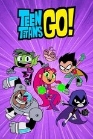
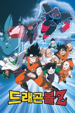
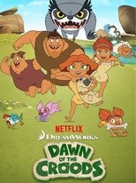

넷플릭스 애니198편 중 인기 60편
순서는 TMDB 인기도입니다 — 넷플릭스 외 서비스는 공식 순위를 공개하지 않습니다. 제공처는 JustWatch 자료(2026-09-22 확인)이며 가입 전 서비스에서 최종 확인하세요. 넷플릭스 요금·할인 →
1 신 도라에몽시리즈 · 2005 · 액션 · 모험 · 왓챠, 티빙에도제공처 ↗2
신 도라에몽시리즈 · 2005 · 액션 · 모험 · 왓챠, 티빙에도제공처 ↗2 무직전생 ~이세계에 갔으면 최선을 다한다~시리즈 · 2021 · 액션 · 모험 · 왓챠, 티빙에도제공처 ↗3
무직전생 ~이세계에 갔으면 최선을 다한다~시리즈 · 2021 · 액션 · 모험 · 왓챠, 티빙에도제공처 ↗3 블리치 BLEACH시리즈 · 2004 · 액션 · 모험 · 디즈니+, 왓챠, 티빙에도제공처 ↗4릭 앤 모티 Rick and Morty시리즈 · 2013 · 애니메이션 · 코미디제공처 ↗5
블리치 BLEACH시리즈 · 2004 · 액션 · 모험 · 디즈니+, 왓챠, 티빙에도제공처 ↗4릭 앤 모티 Rick and Morty시리즈 · 2013 · 애니메이션 · 코미디제공처 ↗5 포켓몬스터시리즈 · 1997 · 애니메이션 · 액션 · 왓챠, 티빙에도제공처 ↗6
포켓몬스터시리즈 · 1997 · 애니메이션 · 액션 · 왓챠, 티빙에도제공처 ↗6 미라큘러스 레이디버그 Miraculous, les aventures de Ladybug et Chat Noir시리즈 · 2015 · 액션 · 모험 · 왓챠, 티빙에도제공처 ↗7
미라큘러스 레이디버그 Miraculous, les aventures de Ladybug et Chat Noir시리즈 · 2015 · 액션 · 모험 · 왓챠, 티빙에도제공처 ↗7 주술회전 Jujutsu Kaisen시리즈 · 2020 · 애니메이션 · SF/판타지 · 왓챠, 티빙에도넷플릭스 한국 최고 4위9퍼피 구조대 PAW Patrol시리즈 · 2013 · 애니메이션 · 가족제공처 ↗10
주술회전 Jujutsu Kaisen시리즈 · 2020 · 애니메이션 · SF/판타지 · 왓챠, 티빙에도넷플릭스 한국 최고 4위9퍼피 구조대 PAW Patrol시리즈 · 2013 · 애니메이션 · 가족제공처 ↗10 레고 닌자고: 드래곤 라이징 LEGO Ninjago: Dragons Rising시리즈 · 2023 · 애니메이션 · 가족 · 프라임비디오에도제공처 ↗11
레고 닌자고: 드래곤 라이징 LEGO Ninjago: Dragons Rising시리즈 · 2023 · 애니메이션 · 가족 · 프라임비디오에도제공처 ↗11 Re: 제로부터 시작하는 이세계 생활시리즈 · 2016 · 애니메이션 · 미스터리 · 왓챠, 티빙에도제공처 ↗14
Re: 제로부터 시작하는 이세계 생활시리즈 · 2016 · 애니메이션 · 미스터리 · 왓챠, 티빙에도제공처 ↗14 헌터x헌터 HUNTER×HUNTER시리즈 · 2011 · 애니메이션 · 액션 · 왓챠에도제공처 ↗15
헌터x헌터 HUNTER×HUNTER시리즈 · 2011 · 애니메이션 · 액션 · 왓챠에도제공처 ↗15 스파이 패밀리 SPY x FAMILY시리즈 · 2022 · 애니메이션 · 액션 · 디즈니+, 왓챠, 티빙에도넷플릭스 한국 최고 6위16몬스터 MONSTER시리즈 · 2004 · 애니메이션 · 드라마제공처 ↗17란마1/2시리즈 · 2024 · 애니메이션 · 액션제공처 ↗18
스파이 패밀리 SPY x FAMILY시리즈 · 2022 · 애니메이션 · 액션 · 디즈니+, 왓챠, 티빙에도넷플릭스 한국 최고 6위16몬스터 MONSTER시리즈 · 2004 · 애니메이션 · 드라마제공처 ↗17란마1/2시리즈 · 2024 · 애니메이션 · 액션제공처 ↗18 장송의 프리렌시리즈 · 2023 · 애니메이션 · 액션 · 왓챠, 티빙에도제공처 ↗19
장송의 프리렌시리즈 · 2023 · 애니메이션 · 액션 · 왓챠, 티빙에도제공처 ↗19 페파 피그 Peppa Pig시리즈 · 2004 · 애니메이션 · 가족 · 프라임비디오, 티빙에도제공처 ↗20
페파 피그 Peppa Pig시리즈 · 2004 · 애니메이션 · 가족 · 프라임비디오, 티빙에도제공처 ↗20 원피스시리즈 · 1999 · 액션 · 모험 · 왓챠, 티빙에도제공처 ↗21
원피스시리즈 · 1999 · 액션 · 모험 · 왓챠, 티빙에도제공처 ↗21 출동! 슈퍼윙스시리즈 · 2014 · 애니메이션 · 가족 · 왓챠에도제공처 ↗22
출동! 슈퍼윙스시리즈 · 2014 · 애니메이션 · 가족 · 왓챠에도제공처 ↗22 블루 록시리즈 · 2022 · 애니메이션 · 액션 · 왓챠에도제공처 ↗23보잭 홀스맨 BoJack Horseman시리즈 · 2014 · 애니메이션 · 코미디제공처 ↗24
블루 록시리즈 · 2022 · 애니메이션 · 액션 · 왓챠에도제공처 ↗23보잭 홀스맨 BoJack Horseman시리즈 · 2014 · 애니메이션 · 코미디제공처 ↗24 약사의 혼잣말 The Apothecary Diaries시리즈 · 2023 · 애니메이션 · 드라마넷플릭스 한국 최고 5위25
약사의 혼잣말 The Apothecary Diaries시리즈 · 2023 · 애니메이션 · 드라마넷플릭스 한국 최고 5위25 Grand Theft Auto VI: 더 길게 살펴보기 Grand Theft Auto VI: An Extended Look영화 · 2026 · 애니메이션 · 액션 · 27분넷플릭스 한국 최고 2위26
Grand Theft Auto VI: 더 길게 살펴보기 Grand Theft Auto VI: An Extended Look영화 · 2026 · 애니메이션 · 액션 · 27분넷플릭스 한국 최고 2위26 레고 닌자고 Ninjago: Masters of Spinjitzu시리즈 · 2012 · 애니메이션 · 액션 · 프라임비디오에도제공처 ↗27피아노의 숲시리즈 · 2018 · 애니메이션 · 드라마제공처 ↗28
레고 닌자고 Ninjago: Masters of Spinjitzu시리즈 · 2012 · 애니메이션 · 액션 · 프라임비디오에도제공처 ↗27피아노의 숲시리즈 · 2018 · 애니메이션 · 드라마제공처 ↗28 마이 리틀 포니: 우정은 마법 My Little Pony: Friendship Is Magic시리즈 · 2010 · 애니메이션 · 코미디 · 왓챠에도제공처 ↗29킹덤시리즈 · 2012 · 액션 · 모험제공처 ↗30
마이 리틀 포니: 우정은 마법 My Little Pony: Friendship Is Magic시리즈 · 2010 · 애니메이션 · 코미디 · 왓챠에도제공처 ↗29킹덤시리즈 · 2012 · 액션 · 모험제공처 ↗30 괴수 8호시리즈 · 2024 · 애니메이션 · 액션 · 디즈니+, 왓챠, 티빙에도제공처 ↗31와일드 로봇 The Wild Robot영화 · 2024 · 가족 · 애니메이션 · 102분제공처 ↗32
괴수 8호시리즈 · 2024 · 애니메이션 · 액션 · 디즈니+, 왓챠, 티빙에도제공처 ↗31와일드 로봇 The Wild Robot영화 · 2024 · 가족 · 애니메이션 · 102분제공처 ↗32 하이큐!!시리즈 · 2014 · 애니메이션 · 코미디 · 왓챠, 티빙에도제공처 ↗33
하이큐!!시리즈 · 2014 · 애니메이션 · 코미디 · 왓챠, 티빙에도제공처 ↗33 나 혼자만 레벨업 Solo Leveling시리즈 · 2024 · 애니메이션 · 액션 · 왓챠, 티빙에도넷플릭스 한국 최고 5위34
나 혼자만 레벨업 Solo Leveling시리즈 · 2024 · 애니메이션 · 액션 · 왓챠, 티빙에도넷플릭스 한국 최고 5위34 진격의 거인시리즈 · 2013 · 애니메이션 · SF/판타지 · 왓챠, 티빙에도제공처 ↗35
진격의 거인시리즈 · 2013 · 애니메이션 · SF/판타지 · 왓챠, 티빙에도제공처 ↗35 아처 Archer시리즈 · 2009 · 코미디 · 액션 · 왓챠, 티빙에도제공처 ↗36
아처 Archer시리즈 · 2009 · 코미디 · 액션 · 왓챠, 티빙에도제공처 ↗36 어둠의 실력자가 되고 싶어서!시리즈 · 2022 · 애니메이션 · 코미디 · 왓챠, 티빙에도제공처 ↗37
어둠의 실력자가 되고 싶어서!시리즈 · 2022 · 애니메이션 · 코미디 · 왓챠, 티빙에도제공처 ↗37 도쿄 구울시리즈 · 2014 · 애니메이션 · 드라마 · 티빙에도제공처 ↗38
도쿄 구울시리즈 · 2014 · 애니메이션 · 드라마 · 티빙에도제공처 ↗38 전생했더니 슬라임이었던 건에 대하여시리즈 · 2018 · 액션 · 모험 · 왓챠, 티빙에도제공처 ↗39
전생했더니 슬라임이었던 건에 대하여시리즈 · 2018 · 액션 · 모험 · 왓챠, 티빙에도제공처 ↗39 극장판 귀멸의 칼날: 무한성편영화 · 2025 · 애니메이션 · 액션 · 155분 · 티빙에도제공처 ↗40
극장판 귀멸의 칼날: 무한성편영화 · 2025 · 애니메이션 · 액션 · 155분 · 티빙에도제공처 ↗40 다이아몬드 에이스시리즈 · 2013 · 애니메이션 · 왓챠, 티빙에도제공처 ↗41
다이아몬드 에이스시리즈 · 2013 · 애니메이션 · 왓챠, 티빙에도제공처 ↗41 모브사이코 100시리즈 · 2016 · 애니메이션 · 액션 · 왓챠에도제공처 ↗42너에게 닿기를시리즈 · 2009 · 애니메이션 · 드라마 · 티빙에도제공처 ↗43
모브사이코 100시리즈 · 2016 · 애니메이션 · 액션 · 왓챠에도제공처 ↗42너에게 닿기를시리즈 · 2009 · 애니메이션 · 드라마 · 티빙에도제공처 ↗43 나의 행복한 결혼시리즈 · 2023 · 애니메이션 · 드라마제공처 ↗44
나의 행복한 결혼시리즈 · 2023 · 애니메이션 · 드라마제공처 ↗44 아케인 Arcane시리즈 · 2021 · 애니메이션 · 액션넷플릭스 한국 최고 2위45빅 마우스 Big Mouth시리즈 · 2017 · 코미디 · 애니메이션제공처 ↗46검볼 The Amazing World of Gumball시리즈 · 2011 · 애니메이션 · 가족제공처 ↗47
아케인 Arcane시리즈 · 2021 · 애니메이션 · 액션넷플릭스 한국 최고 2위45빅 마우스 Big Mouth시리즈 · 2017 · 코미디 · 애니메이션제공처 ↗46검볼 The Amazing World of Gumball시리즈 · 2011 · 애니메이션 · 가족제공처 ↗47 마계학교! 이루마군시리즈 · 2019 · 애니메이션 · 코미디 · 왓챠, 티빙에도제공처 ↗48
마계학교! 이루마군시리즈 · 2019 · 애니메이션 · 코미디 · 왓챠, 티빙에도제공처 ↗48 나츠메 우인장시리즈 · 2008 · 애니메이션 · SF/판타지 · 왓챠, 티빙에도제공처 ↗49
나츠메 우인장시리즈 · 2008 · 애니메이션 · SF/판타지 · 왓챠, 티빙에도제공처 ↗49 바람의 검심 -메이지 검객 낭만기-시리즈 · 2023 · 애니메이션 · 액션 · 왓챠, 티빙에도제공처 ↗50
바람의 검심 -메이지 검객 낭만기-시리즈 · 2023 · 애니메이션 · 액션 · 왓챠, 티빙에도제공처 ↗50 베이블레이드 X BEYBLADE X시리즈 · 2023 · 애니메이션 · 액션 · 디즈니+, 왓챠, 티빙에도제공처 ↗51기묘한 이야기: 1985년에는 Stranger Things: Tales from '85시리즈 · 2026 · 애니메이션 · SF/판타지제공처 ↗52뒤바뀐 친구들의 신비한 모험 Swapped영화 · 2026 · 모험 · 애니메이션 · 102분제공처 ↗53
베이블레이드 X BEYBLADE X시리즈 · 2023 · 애니메이션 · 액션 · 디즈니+, 왓챠, 티빙에도제공처 ↗51기묘한 이야기: 1985년에는 Stranger Things: Tales from '85시리즈 · 2026 · 애니메이션 · SF/판타지제공처 ↗52뒤바뀐 친구들의 신비한 모험 Swapped영화 · 2026 · 모험 · 애니메이션 · 102분제공처 ↗53 스파이더맨: 뉴 유니버스 Spider-Man: Into the Spider-Verse영화 · 2018 · 애니메이션 · 액션 · 117분 · 웨이브, 왓챠에도제공처 ↗54
스파이더맨: 뉴 유니버스 Spider-Man: Into the Spider-Verse영화 · 2018 · 애니메이션 · 액션 · 117분 · 웨이브, 왓챠에도제공처 ↗54 러브, 데스 + 로봇 Love, Death & Robots시리즈 · 2019 · 애니메이션 · SF/판타지제공처 ↗55
러브, 데스 + 로봇 Love, Death & Robots시리즈 · 2019 · 애니메이션 · SF/판타지제공처 ↗55 도쿄 리벤저스시리즈 · 2021 · 애니메이션 · 액션 · 디즈니+, 티빙에도제공처 ↗56마왕학원의 부적합자 ~사상 최강의 마왕인 시조, 전생해서 자손들의 학교에 다니다~시리즈 · 2020 · 애니메이션 · 액션 · 왓챠, 티빙에도제공처 ↗57센과 치히로의 행방불명영화 · 2001 · 애니메이션 · 가족 · 124분제공처 ↗58
도쿄 리벤저스시리즈 · 2021 · 애니메이션 · 액션 · 디즈니+, 티빙에도제공처 ↗56마왕학원의 부적합자 ~사상 최강의 마왕인 시조, 전생해서 자손들의 학교에 다니다~시리즈 · 2020 · 애니메이션 · 액션 · 왓챠, 티빙에도제공처 ↗57센과 치히로의 행방불명영화 · 2001 · 애니메이션 · 가족 · 124분제공처 ↗58 케이팝 데몬 헌터스 KPop Demon Hunters영화 · 2025 · SF/판타지 · 음악 · 96분넷플릭스 한국 최고 1위60오버로드시리즈 · 2015 · 애니메이션 · SF/판타지 · 티빙에도제공처 ↗
케이팝 데몬 헌터스 KPop Demon Hunters영화 · 2025 · SF/판타지 · 음악 · 96분넷플릭스 한국 최고 1위60오버로드시리즈 · 2015 · 애니메이션 · SF/판타지 · 티빙에도제공처 ↗
신 도라에몽시리즈 · 2005 · 액션 · 모험 · 왓챠, 티빙에도제공처 ↗2무직전생 ~이세계에 갔으면 최선을 다한다~시리즈 · 2021 · 액션 · 모험 · 왓챠, 티빙에도제공처 ↗3블리치 BLEACH시리즈 · 2004 · 액션 · 모험 · 디즈니+, 왓챠, 티빙에도제공처 ↗4릭 앤 모티 Rick and Morty시리즈 · 2013 · 애니메이션 · 코미디제공처 ↗5포켓몬스터시리즈 · 1997 · 애니메이션 · 액션 · 왓챠, 티빙에도제공처 ↗6미라큘러스 레이디버그 Miraculous, les aventures de Ladybug et Chat Noir시리즈 · 2015 · 액션 · 모험 · 왓챠, 티빙에도제공처 ↗7
틴 타이탄 GO! Teen Titans Go!시리즈 · 2013 · 애니메이션 · 액션제공처 ↗8주술회전 Jujutsu Kaisen시리즈 · 2020 · 애니메이션 · SF/판타지 · 왓챠, 티빙에도넷플릭스 한국 최고 4위9퍼피 구조대 PAW Patrol시리즈 · 2013 · 애니메이션 · 가족제공처 ↗10레고 닌자고: 드래곤 라이징 LEGO Ninjago: Dragons Rising시리즈 · 2023 · 애니메이션 · 가족 · 프라임비디오에도제공처 ↗11
드래곤볼 Z시리즈 · 1989 · 애니메이션 · SF/판타지제공처 ↗12죠죠의 기묘한 모험시리즈 · 2012 · 애니메이션 · 액션제공처 ↗13Re: 제로부터 시작하는 이세계 생활시리즈 · 2016 · 애니메이션 · 미스터리 · 왓챠, 티빙에도제공처 ↗14헌터x헌터 HUNTER×HUNTER시리즈 · 2011 · 애니메이션 · 액션 · 왓챠에도제공처 ↗15스파이 패밀리 SPY x FAMILY시리즈 · 2022 · 애니메이션 · 액션 · 디즈니+, 왓챠, 티빙에도넷플릭스 한국 최고 6위16몬스터 MONSTER시리즈 · 2004 · 애니메이션 · 드라마제공처 ↗17란마1/2시리즈 · 2024 · 애니메이션 · 액션제공처 ↗18장송의 프리렌시리즈 · 2023 · 애니메이션 · 액션 · 왓챠, 티빙에도제공처 ↗19페파 피그 Peppa Pig시리즈 · 2004 · 애니메이션 · 가족 · 프라임비디오, 티빙에도제공처 ↗20원피스시리즈 · 1999 · 액션 · 모험 · 왓챠, 티빙에도제공처 ↗21출동! 슈퍼윙스시리즈 · 2014 · 애니메이션 · 가족 · 왓챠에도제공처 ↗22블루 록시리즈 · 2022 · 애니메이션 · 액션 · 왓챠에도제공처 ↗23보잭 홀스맨 BoJack Horseman시리즈 · 2014 · 애니메이션 · 코미디제공처 ↗24약사의 혼잣말 The Apothecary Diaries시리즈 · 2023 · 애니메이션 · 드라마넷플릭스 한국 최고 5위25Grand Theft Auto VI: 더 길게 살펴보기 Grand Theft Auto VI: An Extended Look영화 · 2026 · 애니메이션 · 액션 · 27분넷플릭스 한국 최고 2위26레고 닌자고 Ninjago: Masters of Spinjitzu시리즈 · 2012 · 애니메이션 · 액션 · 프라임비디오에도제공처 ↗27피아노의 숲시리즈 · 2018 · 애니메이션 · 드라마제공처 ↗28마이 리틀 포니: 우정은 마법 My Little Pony: Friendship Is Magic시리즈 · 2010 · 애니메이션 · 코미디 · 왓챠에도제공처 ↗29킹덤시리즈 · 2012 · 액션 · 모험제공처 ↗30괴수 8호시리즈 · 2024 · 애니메이션 · 액션 · 디즈니+, 왓챠, 티빙에도제공처 ↗31와일드 로봇 The Wild Robot영화 · 2024 · 가족 · 애니메이션 · 102분제공처 ↗32하이큐!!시리즈 · 2014 · 애니메이션 · 코미디 · 왓챠, 티빙에도제공처 ↗33나 혼자만 레벨업 Solo Leveling시리즈 · 2024 · 애니메이션 · 액션 · 왓챠, 티빙에도넷플릭스 한국 최고 5위34진격의 거인시리즈 · 2013 · 애니메이션 · SF/판타지 · 왓챠, 티빙에도제공처 ↗35아처 Archer시리즈 · 2009 · 코미디 · 액션 · 왓챠, 티빙에도제공처 ↗36어둠의 실력자가 되고 싶어서!시리즈 · 2022 · 애니메이션 · 코미디 · 왓챠, 티빙에도제공처 ↗37도쿄 구울시리즈 · 2014 · 애니메이션 · 드라마 · 티빙에도제공처 ↗38전생했더니 슬라임이었던 건에 대하여시리즈 · 2018 · 액션 · 모험 · 왓챠, 티빙에도제공처 ↗39극장판 귀멸의 칼날: 무한성편영화 · 2025 · 애니메이션 · 액션 · 155분 · 티빙에도제공처 ↗40다이아몬드 에이스시리즈 · 2013 · 애니메이션 · 왓챠, 티빙에도제공처 ↗41모브사이코 100시리즈 · 2016 · 애니메이션 · 액션 · 왓챠에도제공처 ↗42너에게 닿기를시리즈 · 2009 · 애니메이션 · 드라마 · 티빙에도제공처 ↗43나의 행복한 결혼시리즈 · 2023 · 애니메이션 · 드라마제공처 ↗44아케인 Arcane시리즈 · 2021 · 애니메이션 · 액션넷플릭스 한국 최고 2위45빅 마우스 Big Mouth시리즈 · 2017 · 코미디 · 애니메이션제공처 ↗46검볼 The Amazing World of Gumball시리즈 · 2011 · 애니메이션 · 가족제공처 ↗47마계학교! 이루마군시리즈 · 2019 · 애니메이션 · 코미디 · 왓챠, 티빙에도제공처 ↗48나츠메 우인장시리즈 · 2008 · 애니메이션 · SF/판타지 · 왓챠, 티빙에도제공처 ↗49바람의 검심 -메이지 검객 낭만기-시리즈 · 2023 · 애니메이션 · 액션 · 왓챠, 티빙에도제공처 ↗50베이블레이드 X BEYBLADE X시리즈 · 2023 · 애니메이션 · 액션 · 디즈니+, 왓챠, 티빙에도제공처 ↗51기묘한 이야기: 1985년에는 Stranger Things: Tales from '85시리즈 · 2026 · 애니메이션 · SF/판타지제공처 ↗52뒤바뀐 친구들의 신비한 모험 Swapped영화 · 2026 · 모험 · 애니메이션 · 102분제공처 ↗53스파이더맨: 뉴 유니버스 Spider-Man: Into the Spider-Verse영화 · 2018 · 애니메이션 · 액션 · 117분 · 웨이브, 왓챠에도제공처 ↗54러브, 데스 + 로봇 Love, Death & Robots시리즈 · 2019 · 애니메이션 · SF/판타지제공처 ↗55도쿄 리벤저스시리즈 · 2021 · 애니메이션 · 액션 · 디즈니+, 티빙에도제공처 ↗56마왕학원의 부적합자 ~사상 최강의 마왕인 시조, 전생해서 자손들의 학교에 다니다~시리즈 · 2020 · 애니메이션 · 액션 · 왓챠, 티빙에도제공처 ↗57센과 치히로의 행방불명영화 · 2001 · 애니메이션 · 가족 · 124분제공처 ↗58
못 말리는 크루즈 패밀리 Dawn of the Croods시리즈 · 2015 · 애니메이션 · 가족제공처 ↗59케이팝 데몬 헌터스 KPop Demon Hunters영화 · 2025 · SF/판타지 · 음악 · 96분넷플릭스 한국 최고 1위60오버로드시리즈 · 2015 · 애니메이션 · SF/판타지 · 티빙에도제공처 ↗